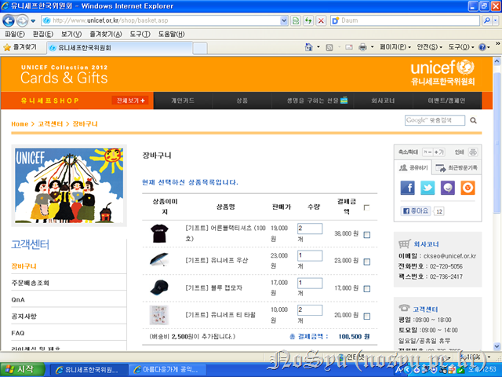
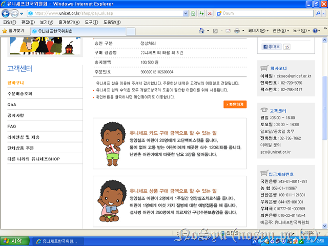
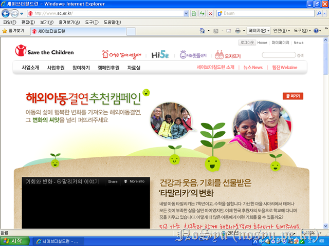
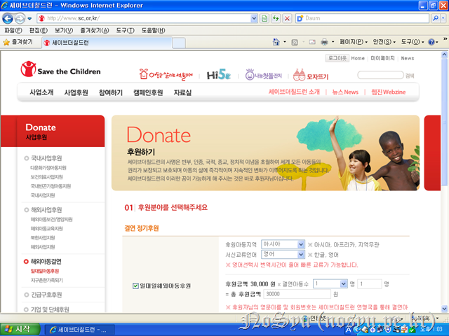
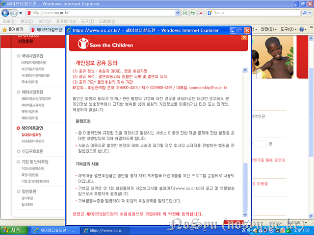
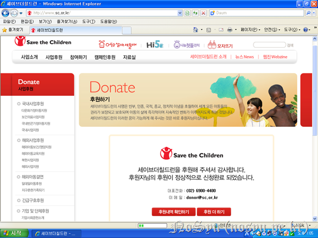
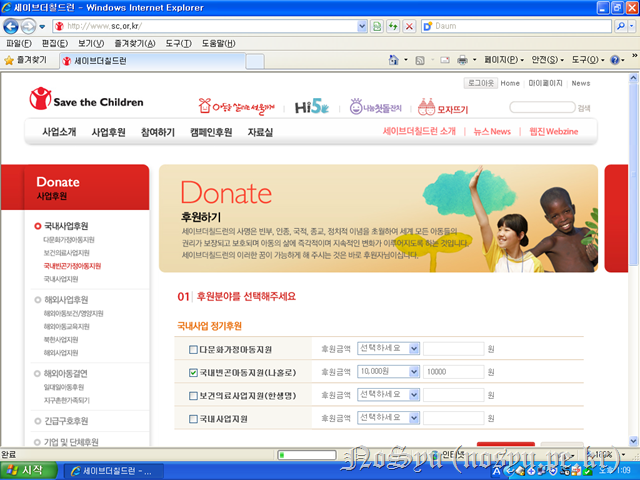
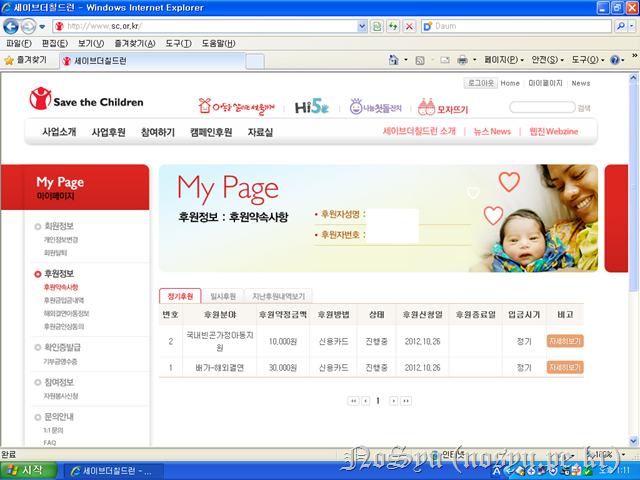

변하지 않기를 바란다는 그의 마음은 변한다는 것을 이번에 증명하는구나. 이번 생일에는 일이 있어서 당일에 축하를 할 수 없으니 그 전에 축하하는 이를 이해해주기를 바랄 뿐이다.
이번에도 기부를 하는구나. 이번 기부는 저번과 흡사하여서 편하구나. 이번 기부금은 483,565원이구나. 작년보다 더욱 늘어났구나.^^ 좋은 것인지 아닌지는 잘 모르겠다. 다만, 그러할 뿐이다.
먼저 유니세프의 기념상품을 구입하기로 했지.

이번에는 이렇게 하기로 했단다. 총 100,500원이구나.

이렇게 결제를 완료했단다. 유니세프 상품 구매 금액으로 어린이들을 도와줄 수 있다고 하는구나.
이제 남은 돈은 세이브더칠드런에 가서 기부를 하는 것을 추천한단다. 이유는 두 가지야. 하나는 국내 어린이들을 위한 사업을 하고 있기 때문이고 다른 하나는 한 어린이와 1:1로 맺어 진행할 수 있기 때문이지.

먼저 해외아동결연을 추천한단다.

한 달에 3만원을 통해서 지원을 할 수 있다고 하는구나.

동의를 하라고 해서 살펴보니 개인정보를 사용하는데 있어서 동의를 구하는구나. 체크하는 것이 좋을 것 같아.

후원을 완료하였단다.
그리고 다음은 작년에도 계속 하던 나홀로아동 없는 세상 만들기에 후원하는 것이란다.

지난번처럼 1만원인 것이 아쉽지만, 그래도 기부금에 한계가 있으니 어쩔 수가 없구나.

이렇게 두 가지를 후원하는구나. 한 달에 4만원씩 1년 동안 하면 48만원이구나.
그렇게 살펴보니 처음에 후원해주기로 했던 돈을 10만원 가량 더 썼구나. 이거 어떻게 하지?^^
어차피 1년에 기부하는 것은 총 기부금의 일부이니 조금 더 기부한다고 해서 문제 될 것이 없겠지. 그러니 괜찮다고 생각해.
어찌되었든 생일이 아닌 날에 생일을 축하하는 것이 무척이나 이상하구나. 하지만 생일이면 어떻게 생일이 아니면 어떠하냐. 중요한 것은 1년에 한 번 소중한 날을 기억하고 그것을 축하해주고 그것을 행동으로 보여주는 것이겠지. 그렇게 생각하며 이 글을 끝맺어본다.